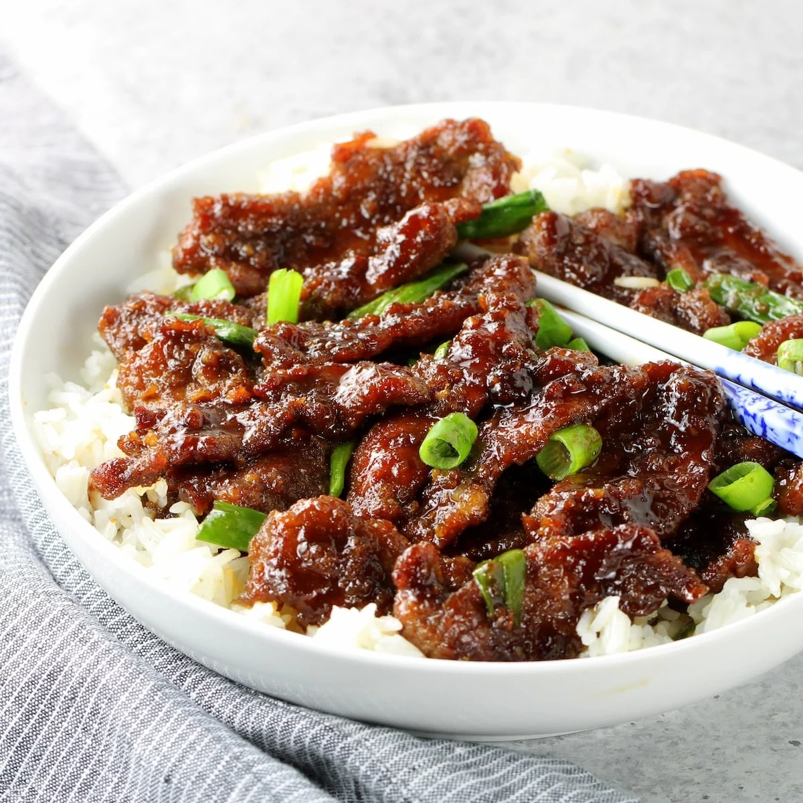

Slow Cooker Mongolian Beef

Description
A dish guaranteed to taste like it came right from the chinese restaurant! Best served over rice!
This is what you'll need! (Ingredients)
- 1 pound flank steak, cut into bite-sized portions
- ¼ cup cornstarch
- 2 teaspoons olive oil
- 1 onion, thinly sliced
- 1 tablespoon minced garlic
- 3 large green onions, sliced diagonally into ½ inch pieces
- ½ cup soy sauce
- ½ cup water
- ½ cup brown sugar
- ½ teaspoon minced fresh ginger root
- ½ cup hoisin sauce
Directions! How do we do this?
It's actually pretty simple!
- Place the flank steak and cornstarch into a resealable plastic bag. Shake the bag to evenly coat the flank steak with the cornstarch. Allow the steak to rest for 10 minutes
- Heat olive oil in a large skillet over medium-high heat. Cook and stir steak until evenly browned, 2 to 4 minutes. Place onion, garlic, flank steak, green onions, soy sauce, water, brown sugar, ginger, and hoisin sauce in a slow cooker. Cook on Low setting for about 4 hours